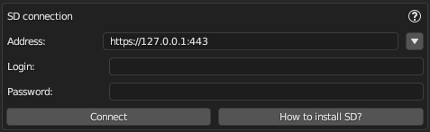
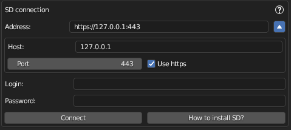

SD Connection Panel
The SD Connection panel is configured to connect to the Automatic1111 Web UI for Stable Diffusion.

Connection Settings
To establish a connection with an SD service, please provide the following details:
- Address: Enter the full URL of the SD service you wish to connect to.
The service can be hosted on any internet address, not just localhost. For example,https://fot3z9z5.vfdv.net/. To fill it open your Automatic1111 site in a web browser, copy the entire URL to your clipboard and paste it here. - Login: Input the username or login ID as provided by the SD service.
- Password: Enter the password associated with the service.
Click the Connect button to establish a connection to Stable Diffusion.
Upon successful connection, a message such as "Connection established" will appear.
If the connection has been established, the Connect button will change to Reconnect. You can click this to test the connection or to reconnect if any settings have been modified.
Additional URL Settings

For more detailed control, press the "triangle" icon next to the address line to access additional settings:
- Host: allow you to enter just the host address.
- Port: If your service doesn't use the standard HTTPS port (443), specify the port number here.
- Use HTTPS: Tick this option if your service requires a secure HTTPS connection, which corresponds to an HTTPS prefix in the URL.